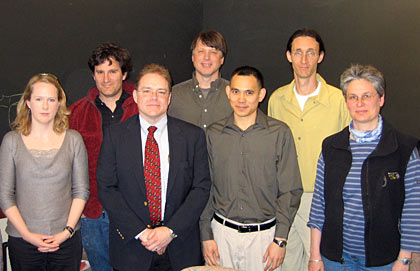
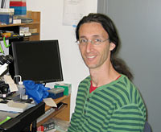
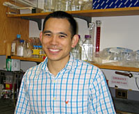
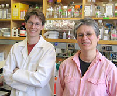
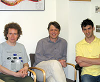
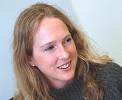
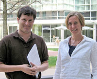

News Archives : 2007 : Merck Presents 2007 Awards for Genome-Related Research
by Jim Henle
April 30, 2007
|  From L to R: Ann Pearson, Michael Brenner, Reid Leonard of Merck, Craig Hunter, Brian Chen, Iftach Nachman, and Catherine Dulac |
The recipients of the 2007 Merck Genome-Related Research Awards were honored at a special luncheon Monday, April 9, in Sherman Fairchild. Dr. Reid J. Leonard, Executive Director of Licensing and External Research for Merck Research Laboratories, Boston, represented the grantor, while Profesors Andrew McMahon and Catherine Dulac hosted for MCB.
Two postdoctoral awards and four awards for Faculty of Arts and Sciences (FAS) members are presented annually through MCB to support genomics research in FAS. Iftach Nachman, of the FAS Center for Systems Biology, and Brian Chen of the Joshua Sanes lab in MCB received the post-doctoral awards. Faculty honors were distributed to Catherine Dulac (with postdoctoral lab member Chris Gregg) and Craig Hunter of MCB, Ann Pearson of the Department of Earth and Planetary Sciences (also OEB & MCB), and Michael P. Brenner, School of Engineering and Applied Sciences, with Katharina Ribbeck, FAS Center for Systems Biology.
This is the fifth year of the five-year award program. Postdoctoral fellowships are valued at $50,000 each, while one-year faculty pilot project awards are valued at $20,000 each.

Iftach Nachman

Brian Chen

Chris Gregg and Catherine Dulac

Post-docs Daniel Schott (left) and Itai Yanai (right) with Craig Hunter

Ann Pearson

Michael Brenner and Katharina Ribbeck
The award recipients and their research projects are described below.
Post-doctoral Awards
Iftach Nachman received a post-doctoral award for his research, "The Dynamics of Meiotic Entry in Budding Yeast". Nachman has set himself the difficult task of exploring the temporal aspects of meiotic processes, and in particular to find factors underlying the variability of meiotic onset in the yeast S. cerevisiae. Nachman’s previous research has already yielded the surprising result that such variability is governed by the meiotic transcriptional "master regulator", Ime1; phenotypic differences are modulated through this factor. In the course of this work, Nachman developed new experimental systems, and his work has drawn the attention of several labs, including the Kleckner and Murray groups in MCB. He plans to pursue further work in meiotic onset, focusing on genotypic variation and also on the dynamics of Ime1 and a protein kinase, Ime2, a target and negative regulator of it. Finally, Nachman will expand the uses of his new methodologies to the investigation of temporal patterns of protein dynamics, focusing on cell fate determination in mammalian cells
Brian Chen ("Molecular Mechanisms of Synaptic Specificity in the Vertebrate Retina") has been developing new experimental methods for investigating some fundamental questions of neurobiology – as he puts it, "whether neurons have an intrinsic ability to wire up specifically to their correct synaptic partners, and how this wiring precision is achieved". Much work has been done about how axons are guided to appropriate areas, but less is known about how, subsequently, specific synapses are formed, how from hundreds of possibilities, synaptic partners are found. Working with the model of retinal neurons, which involves a limited number of major cell types, Chen has devised experiments that record interactions of these types; initial results already show specificities of interaction that can be further probed for patterns of target selection and whose mechanisms can be investigated.
Faculty Awards
Catherine Dulac and Chris Gregg are working on sexual differentiation in their project, "Genomics and Epigenetics: New approaches to the Study of Sexual Dimorphism in Brain Function". Recent insight into sexual differentiation has led researchers beyond the prevalent interest in sex steroid hormones; there are genetic factors working independently of these hormones. Dulac and Gregg have developed a novel research program that focuses on the phenomenon of genetic imprinting in sexually dimorphic behavior. It has been found that there are major effects on brain structure by genes located on the X chromosome; moreover, the imprinting by paternal and maternal X chromosomes is significant. Since males and females differ with respect to their X chromosomes (the male having only the maternal X, while the female having both), it opens the possibility that imprinting may be a determinant in brain structure and behavior, an avenue these researchers will further explore.
Craig Hunter, in "Nature, nurture, and transgenerational gene regulation" will be investigating a subtle phenomenon that has tended to fall between two stools on the evolutionary timescale. Adaptation is often seen in the short term, with rapid-response transcription provoked by environmental change, or the long-term genomic change leading to population variation or even speciation. In between, there is a time-scale of a few generations; only recently have tools been developed that may allow for close examination of this scale of change. Hunter will be using C. elegans as a model; among its other suitable features, C. elegans provides its embryos with a large array of mRNAs. This feature allows several questions to be addressed genome-wide: Is the variability of this endowment due to genetic or environmental sources? And in what ways? Further, will these different packages tend to be transmitted across more than one generation? What role will RNAi mechanisms play? Hunter’s work is a basic-research project that may have broad evolutionary implications.
Ann Pearson’s project is titled "Natural Products Discovery: A Genome-Based Investigation of the Sources of Triterpenoid Lipids". She will be investigating a class of compounds called hopanoids; these are important in earth-historical studies for their association with the presence of bacteria. Often considered to be analogous to steroids in Eukaryotes, hopanoids have yet to be adequately analyzed in term of their relation to bacterial taxonomy. Further, a wide variety of structures has been found in environmental samples; their particular correlation with metabolic functions has not been adequately pursued. The present study will build on Dr. Pearson’s work in elucidating hopanoid sequences by metagenomic analysis to link hopanoids to metabolic functions and, ultimately, phylogenetic marker genes.
Michael Brenner and Katharina Ribbeck’s project, "Probing the interactions of Importinβ-like nuclear transport receptors with their cargos: a bioinformatics approach", concerns the transport of proteins in and out of the nucleus, and its regulation. Protein cargo is freighted through the nuclear membrane by transport receptors of the Importinβ family (TRs). Cargo, however varied, is qualified for transport by localization signals; TRs then recognize and haul. A number of the transport/cargo pairs have already been identified, allowing for the possibility that a bioinformatic inquiry might expose what properties of the two molecules correlate. This would not only allow for further insight into the mechanisms of transport but also provide a way to predict unknown pairings of TRs and cargo proteins.
In sum, Merck has again found a wide array of scientific studies to honor and reward, and has again shown their commitment to the value of imaginative explorations in basic science.
| Postdoctoral Awards The one-year fellowships provide support to each postdoctoral fellow with more than two but less than five years of postdoctoral experience. Especially encouraged to apply are those whose work is interdisciplinary in the sense that their intellectual activities extend beyond their own laboratory. This year’s awardees are:
Faculty Awards
|